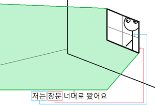

Vocabulary
Nouns:
아파트 = apartment, apartment complex
Common Usages:
아파트단지 = apartment complex (a group of apartments together all part of the same complex)
Examples:
그 아파트가 경비 아저씨가 있지만 안전하지 않아요
= Even though that apartment (complex) has a security guard, it isn’t safe
제가 사는 곳은 아파트 단지가 모여 있는 주거 지역입니다
= The place that I live is a residential area with (many) apartment complexes huddled together
잔디 = grass
Common Usages:
인조잔디 = artificial grass (“turf”)
잔디를 깎다 = to mow the lawn
Examples:
잔디를 깎아야 되지만 밖에 나가기 싫어요
= I have to cut/mow the grass/lawn, but I don’t want to go outside
잔디보호를 위해 꼭 정해진 길로만 지나가 주세요
= In order to protect the lawn, please only go/walk/pass by on the designated path
경비 = security
Common Usages:
경비 아저씨 = security guard
경비실 = security office/room
경비를 강화하다 = to strengthen security
경비를 서다 = to be on guard
경비가 삼엄하다 = for security to be strict
Examples:
그 아파트가 경비 아저씨가 있지만 안전하지 않아요
= Even though that apartment (complex) has a security guard, it isn’t safe
이 곳은 사람들의 안전을 위해 열 명의 경호원들이 경비를 서요
= For the safety of this area, there are ten security guards/body guards on guard
공항에서는 테러위험방지를 위해 경비가 다른 곳보다 삼엄해요
= Security at airports is more strict to prevent against the dangers of terrorism
동물 = animal
Common Usages:
동물원 = zoo
육식동물 = carnivore
초식동물 = herbivore
동물성 기름 = animal fats
Examples:
동물원에 카메라를 가지고 입장해도 돼요?
= Am I allowed to enter the zoo with a camera?
제가 동물원에서 유일하게 보고 싶은 동물은 코끼리예요
= The only animal I want to see at the zoo are the elephants
우리 어머니가 강아지를 아주 좋아하지만 다른 동물을 싫어해요
= My mother really likes dogs/puppies, but doesn’t like other animals
하지만 펭귄이 있는 곳은 동물원 입구에서 멀다고 하니 아빠와 나는 우선 다른 동물들을 먼저 봤다
= But (because) the place the penguins are was said to be far from the zoo entrance, so Dad and I saw other animals first
선 = line
Notes: “줄” can also be translated to “line” and can be confused with 선. “줄” usually refers to a string or rope (and is also used to refer to a queue of people). “선” is usually more abstract or something that can’t be manipulated.
Common Usages:
호선 = a line on the subway. For example, “Line 2”
차선 = a lane (of traffic) “a car line”
국경선 = border line
시선 = one’s eye line
선을 그리다 = to draw a line
선을 긋다 = to draw a line
Examples:
주차를 이 선 안에 해야 되지 않아요? = Don’t you have to park between these lines?
2호선은 서울 도심 주위를 돌아요 = Line 2 circles around the downtown of Seoul
수학시간에 도형에 대해 배울 때는 선을 그릴 일이 많기 때문에 꼭 자를 가져와 주세요
= In math class, when you learn about figures there are many times where you will draw lines, so please bring a ruler
감각 = sense, feeling
Common Usages:
감각신경 = sensory nerves
(패션) 감각이 뛰어나다 = to have a keen sense of (fashion)
감각이 마비되다 = for something to go numb (for feeling to be “paralyzed”)
Examples:
마취를 했지만 입에 아직 감각이 있어요
= I received freezing/anesthetic, but there is still feeling in my mouth
슬기는 패션 감각이 뛰어나 많은 사람들이 그녀를 패션스타라고 생각해요
= Seulgi has a keen sense of fashion, so many people think of her as a fashion star
한계 = limit
Common Usages:
한계를 넘어서다 = to go over a limit
한계를 뛰어넘다 = to go over a limit
한계에 도달하다 = to reach a limit
Examples:
저는 제 자신의 한계를 뛰어넘기 위해 최선을 다해서 운동을 해요
= In order to exceed my limits, I put everything I’ve got into exercise
에베레트산을 오르는 일은 인간의 한계를 넘어서는 아주 힘든 일이에요
= Climbing Mount Everest is a difficult task that pushes the limits of humans
고통 = pain
Common Usages:
뼈와 살을 깎는 고통 = an idiom for severe pain
고통을 버티다/참다 = to endure pain
고통을 감내하다 = a difficult way to say “to endure pain”
Examples:
고통으로 인해 저는 일에 집중하지 못했어요 = I couldn’t concentrate as a result of the pain
상처에 치료를 받았지만 아직 고통이 있어요 = I received treatment on my wound, but there is still pain
환자분이 느끼는 고통은 부작용 중 하나 일 뿐이에요
= The pain you are feeling is just one of the side effects
뼈가 아플 때 고통을 버티려고 이 약을 먹어요
= When your bones are sore, in order to endure the pain, take this medicine
태양 = sun
Notes: 태양 is more often used in scientific usages of the word “sun.” When looking at the sun, or referring to it rising and setting, the word “해” is often used.
Common Usages:
태양계 = solar system
태양열 발전 = solar power
Examples:
오늘 우리가 달에 대한 것을 배울 거지만 우선 태양에 대한 것을 배워야 돼요
= Today, we’ll learn about the moon, but first, we must learn about the sun
지구과학 수업시간에 배운 태양계는 매우 흥미로워요
= The solar system, which we learned about in earth science class, is very interesting
상처 = wound
Common Usages:
상처를 받다 = to receive a wound
상처를 입다 = to be wounded
상처를 씻다 = to clean a wound
마음의 상처 = a wound to one’s mind/spirit/heart
상처를 치료하다 = to heal a wound
Examples:
상처에 치료를 받았지만 아직 고통이 있어요 = I received treatment on my wound, but there is still pain
제가 어렸을 때 왕따를 당한 것은 마음의 상처가 되었어요 = Suffering as an outcast when I was young left scars on my spirit
Verbs:
내밀다 = to stick out of, to stretch out of
Translation: to stick out of, to stretch out of
Common Usages:
혀를 내밀다 = to stick out one’s tongue
명함도 못 내밀다 = to not be able to get anywhere with a skillset
Examples:
친구는 저를 놀리기 위해 혀를 내밀면서 제 별명을 불렀어요
= To tease me, my friend called out my nickname while sticking out his tongue
이 정도의 경험으로는 이 회사에 명함도 못 내밀어요
= With that level of experience, he won’t get anywhere (won’t even be able to give out his business card)
얼다 = to freeze
Common Usages:
얼음 = ice
몸이 얼다 = for one’s body to be frozen or stiff
Examples:
물을 마셔야 되지만 물이 아직도 다 얼어 있어요 = I need to drink water, but it is still all frozen
뒤에서 누군가가 저를 따라오는 것을 느끼자 몸이 얼어서 움직일 수가 없었어요
= I felt somebody following me from behind and my body froze up so I couldn’t move
소리 지르다 = to shout, to scream
Notes: This is technically two words in Korean, but they often come hand-in-hand, and in English “scream” is only one word.
소리 질러! = “Make some noise!” (Common at a rock concert or some event with a crowd)
Examples:
소리를 많이 질러도 그는 제 말을 듣지 못했어요
= Regardless of how much I screamed he didn’t hear my voice
시위자들이 소리를 지르기도 했고 가게창문을 깨기도 했어요
= The protesters screamed and also broke store windows too
저는 동생을 간지럽게 해서 소리를 지르게 했어요
= I tickled my younger brother to the point that it made him scream
위험에 처하면 망설이지 말고 크게 소리를 지르세요!
= When you run into danger, don’t hesitate, and just scream loudly!
마취하다 = to give someone an anesthetic
The noun form of this word (“마취”) translates to “anesthetic.”
Common Usages:
전신마취 = full/general anesthetic
부분마취 = local anesthetic
Examples:
마취를 했지만 입에 아직 감각이 있어요
= I received freezing/anesthetic, but there is still feeling in my mouth
통증에도 불구하고 마취 없이 소화기관에 수술을 받았어요
= Despite the pain, he had surgery on his digestive organs without anesthesia
전신마취를 하는 것은 건강에 좋지 않고 위험하니 신중하게 고려해야 합니다
= Getting general anesthesia isn’t good for your health and is dangerous, so you should think carefully (about it)
로그인하다 = to log in
Examples:
로그인이 안 돼요 = The log-in isn’t working (I can’t log in)
로그인을 이미 했지만 그 화면이 안 보여요 = I already logged in, but I don’t see that screen
핸드폰으로 이메일에 로그인할 수 있어요 = You can log in to your e-mail using a cell-phone
어제 모르는 사람이 제 페이스북에 로그인해서 장난을 했어요 = Yesterday, some person (I don’t know) logged into my Facebook and played around
장난하다 = to joke, to play around
The noun form of this word (“장난”) translates to “a joke”
Common Usages:
장난감 = toys
짓궂은 장난을 하다 = to play a practical joke/hoax
장난 아니다 = a term used to express one’s amazement towards the extent of something. For example, if friends are talking about how expensive a dinner menu is, you could say “장난 아니다!” to say “Yeah, it’s no joke, it really is expensive!”
Examples:
어제 모르는 사람이 제 페이스북에 로그인해서 장난을 했어요
= Yesterday, some person (I don’t know) logged into my Facebook and played around
제 친구가 저에게 짓궂은 장난을 해서 저는 크게 화를 냈어요
= I was really mad because a friend played a practical joke on me
나타내다 = to appear, to come in view
Common Usages:
감정을 나타내다 = to show one’s emotions
Examples:
이 사진이 무언가를 나타내기 위해 찍은 사진 같아서 분석을 해 봐야 해요
= I think this picture was taken to show something, so we should analyze it
이 미술작품은 행복한 가족을 나타내는 작품으로 10만 달러 이상의 가치가 있습니다
= This work of art shows a happy family, and it is worth more than 100,000 dollars
참가하다 = to participate
The noun form of this word (“참가”) translates to “participation.”
Common Usages:
대회에 참가하다 = to participate in a competition
Examples:
그 경기에 참가하고 싶지만 네가 안 하면 나도 안 할래
= I want to participate in the match, but if you don’t do it, then I won’t
신입생만 예외로 하고 모든 학생들이 체육대회에 참가해야 해요
= With the exception of freshmen, all students must participate in the physical competition/event
미술대회에 참가하는 신입생들은 잊지 말고 꼭 10시까지 모여주세요
= Freshmen participating in the art competition, don’t forget, and be sure to gather by 10 o’clock
Passive Verbs:
나타나다 = to appear, come in view
Examples:
이 길을 계속 따라가다 보면 찾고 있는 시장이 나타날 거예요
= If you keep following this road, the market you are looking for will appear, come into view
모든 사람들이 그를 싫어하지만 그는 파티에 나타났어요
= Even though everybody hates him, he showed up at the party
그 사람의 얼굴이 기억 안 났지만 갑자기 제 꿈에 나타났어요
= I had forgotten that person’s face, but it suddenly appeared to me in my dream
반 이상의 학생들이 늦게 약속장소에 나타나서 선생님이 화가 났어요
= The teacher was mad because more than half of the students showed up late to the meeting place
Adverbs and Other Words:
혹시 = indicates something is unknown
The pronunciation of this word is closer to “혹씨”
Notes: Many Korean words are used to intensify a feeling or indicate a particular mood in a sentence. When you say “혹시,” it indicates that something later on in the sentence is unknown. In practice, “혹시” is often added to question sentences because, by their nature, there is something unknown.
For example:
혹시 파티에 갈 거야? = Are you going to the party?
Which would be the exact same as:
파티에 갈 거야?
But, the sentence doesn’t always need to be a question in order to use 혹시. For example:
혹시 오시면 연락해주세요 = If you come, let me know
The usage is fairly confusing, and one of the only words that I actually “picked up” simply from listening to Korean – as it was never a word that I studied.
Examples:
혹시 밖에 비가 왔어요? = Is it raining outside?
부장님! 혹시 캐나다에 언제 가실 거예요? = Boss! When are you going to Canada?
혹시 가고 싶은 데가 있어요? = Do you want to go anywhere?
혹시 소스를 조금이라도 주면 안 돼요? = Would you be able to give me just a little bit of sauce?
제가 지금 가야 되는데 혹시 그것을 내일 저한테 줄 수 있어요? = I have to go now; can you give that to me tomorrow?
우선 = to do something first
This word appears in Korean Sign Explanation Video 15.
Notes: 우선 is used to indicate that one action will occur before doing something else, usually because the first action has priority over the second. It is hard to give a translation that fits every usage, but often times you will see the translation as “priority.”
Examples:
우리가 가기 전에 나는 우선 밥을 먹고 싶어 = Before we go, I want to eat first
오늘 우리가 달에 대한 것을 배울 거지만 우선 태양에 대한 것을 배워야 돼요
= Today, we’ll learn about the moon, but first, we must learn about the sun
우선 내일 무엇을 입을지 정하기 위해 옷장을 확인했다
= First things first, in order to set what I will wear for tomorrow, I checked my closet
우선 비행기표를 사고 나서 함께 일정을 짜는 게 더 나을 것 같아요
= It will probably be better if we first buy the plane ticket and then set the plans together
하지만 펭귄이 있는 곳은 동물원 입구에서 멀다고 하니 아빠와 나는 우선 다른 동물들을 먼저 봤다 = But (because) the place the penguins are was said to be far from the zoo entrance, so Dad and I saw other animals first
너머 = beyond, over
Notes: 너머 is used to describe a location “beyond” a specified noun. The location being described is usually ambiguous, but “너머” allows the speaker to indicate that (even though we don’t exactly where location is), we do know that it happened beyond a specific noun. For example, look at the following sentence:
저는 창문 너머로 봤어요 = I looked beyond (through) the window
Here is a picture that shows the image I have in my brain when I read that sentence:

In this sentence, we know what “저” refers to, and we know what “창문” refers to. Those are both specific things that we can point to. However, 너머 refers to the area beyond the noun that it follows. In this sentence, 너무 refers to the area beyond the window, which can be represented by the green in the image below. As you can see, it is not a specific place but rather a broad area.
Below are more examples:
그렇게 높은 산을 꼭대기까지 올라가면 도시 너머로 숲이 보여요
= If you go up a high mountain like that, you can see a forest beyond the city
머리를 창문 너머로 내밀었지만 밖에 있는 친구가 저를 보지 않았어요
= I stuck my head out of the window, but my friend outside didn’t see me
친구들이랑 축구공을 차다가 공이 울타리 너머로 넘어 갔어요
= I was kicking the soccer ball with friends and then the ball went over the fence
Introduction
In this lesson, you will learn how to use ~지만 to connect two clauses. You will also learn about adding this to 그렇다 to make그렇지만. Let’s get started.
Even though: ~지만
One of the most common words in Korean is “하지만,” which means “but.” This word (in English and Korean) is usually used at the beginning of a sentence. For example:
저는 먹고 싶어요. 하지만 배고프지 않아요 = I want to eat. But, I am not hungry.
Although both of those sentences are correct, there are a lot of syllables that you can eliminate from them. You should be aware by now, that Korean people always want to make their sentences as short as possible. You can create this meaning of “but” by eliminating “하지만” and connecting the two clauses with ~지만. For example:
저는 먹고 싶지만 배고프지 않아요 = I want to eat but I am not hungry.
This often translates to “even though…” in English. Notice how the following two sentences in English are exactly the same:
Even though I want to eat, I am not hungry.
I want to eat, but I am not hungry.
Essentially, by adding ~지만 to the stem of a word, that clause gets negated, and the opposite is usually described in the latter clause. Below are many examples. Notice that it can be added directly to the stems of verbs, adjectives and 이다. Also, because the addition starts with the letter “ㅈ” there are no irregulars that come into play with this addition.
Notice in all of the examples in this lesson that the clauses before ~지만 are true or have already occurred (or are certain to occur in the future). This will become important when I distinguish ~지만 from ~아/어도 in the next lesson.
부산에 가고 싶지만 차가 없어서 못 가요
= Even though I want to go to Busan, I can’t go because I don’t have a car
물을 마셔야 되지만 물이 아직도 다 얼어 있어요
= I need to drink water, but it is still all frozen
요즘에 한국어를 열심히 공부하고 있지만 아직도 잘 말할 수 없어요
= Even though I am studying Korean hard these days, I still can’t speak well
그 연예인이 돈이 많지만 왜 그렇게 행복하지 않아 보여요?
= That celebrity has a lot of money, but why doesn’t he look happy
그 아파트가 경비 아저씨가 있지만 안전하지 않아요
= Even though that apartment (complex) has a security guard, it isn’t safe
잔디를 깎아야 되지만 밖에 나가기 싫어요
= I have to cut/mow the grass/lawn, but I don’t want to go outside
우리 어머니가 강아지를 아주 좋아하지만 다른 동물을 싫어해요
= My mother really likes dogs/puppies, but doesn’t like other animals
그 경기에 참가하고 싶지만 네가 안 하면 나도 안 할래
= I want to participate in the match, but if you don’t do it, then I won’t
모든 사람들이 그를 싫어하지만 그는 파티에 나타났어요
= Even though everybody hates him, he showed up at the party
————————–
You can conjugate the clause before ~지만 to the past tense by adding ~았/었 to it. For example:
밥을 먹었지만 배고파요
= Even though I ate, I am hungry
상처를 치료했지만 아직 고통이 있어요
= I treated the wound, but there is still pain
로그인을 이미 했지만 그 화면이 안 보여요
= I already logged in, but I don’t see that screen
원래 한국에 여행하러 가고 싶었지만 돈이 없어서 못 갔어요
= Originally I wanted to go to Korea to travel, but because I didn’t have any money, I couldn’t go
머리를 창문 너머로 내밀었지만 밖에 있는 친구가 저를 보지 않았어요
= I stuck my head out of the window, but my friend outside didn’t see me
마취를 했지만 입에 아직 감각이 있어요
= I received freezing/anesthetic, but there is still feeling in my mouth
제가 친구에게 소리를 질렀지만 친구가 제 말을 못 들었어요
= I yelled to my friend, but he didn’t hear what I said
그 사람의 얼굴이 기억 안 났지만 갑자기 제 꿈에 나타났어요
= I had forgotten that person’s face, but it suddenly appeared to me in my dream
————————–
You can conjugate the clause before ~지만 to the future tense by adding the ~ㄹ/을 것이다 (or ~ㄹ/을 거다) or ~겠다 forms. In all cases, ~지만 is attached to these constructions after “~다” is removed. For example:
한국에 안 갈 것이지만 여전히 한국어를 배우고 싶어요
= Even though I will not go to Korea, I still want to learn Korean, or:
한국에 안 갈 거지만 여전히 한국어를 배우고 싶어요
= Even though I will not go to Korea, I still want to learn Korean, or:
한국에 안 가겠지만 여전히 한국어를 배우고 싶어요
= Even though I will not go to Korea, I still want to learn Korean
오늘 선생님이 안 올 거지만 우리는 선생님이 준비하신 내용을 공부해야 돼요
= Even though the teacher won’t come today, we need to study the material that she prepared
오늘 우리가 달에 대한 것을 배울 거지만 우선 태양에 대한 것을 배워야 돼요
= Today, we’ll learn about the moon, but first, we must learn about the sun
그렇지만
You first learned about the word “그렇다” in Lesson 23. Since then, you have seen other grammatical principles applied to it. For example, in Lesson 37 you saw how it can be used with ~아/어서 to form 그래서. For example:
Person 1: 비가 왔어요? = Did it rain?
Person 2: 응, 그래서 나가기 싫어요 = Yeah, that’s why/therefore I don’t want to go out
It is also common to attach ~지만 to 그렇다. When some situation is being talked about, you can use “그렇지만” to say “Even though (that situation)…”. The common translation of 그렇지만 is simply “however.” For example:
Person 1: 주차를 이 선 안에 해야 되지 않아요? = Don’t you have to park between these lines?
Person 2: 그렇지만 차가 너무 커서 그렇게 할 수 없어요 = However, the car is too big so I can’t do it like that.
Person 1: 지금 가야 되지 않아요? = Don’t you have to go now?
Person 2: 네, 그렇지만 할 게 많아서 지금 못 가요 = Yes, however I can’t go now because I have a lot of things to do
That’s it!